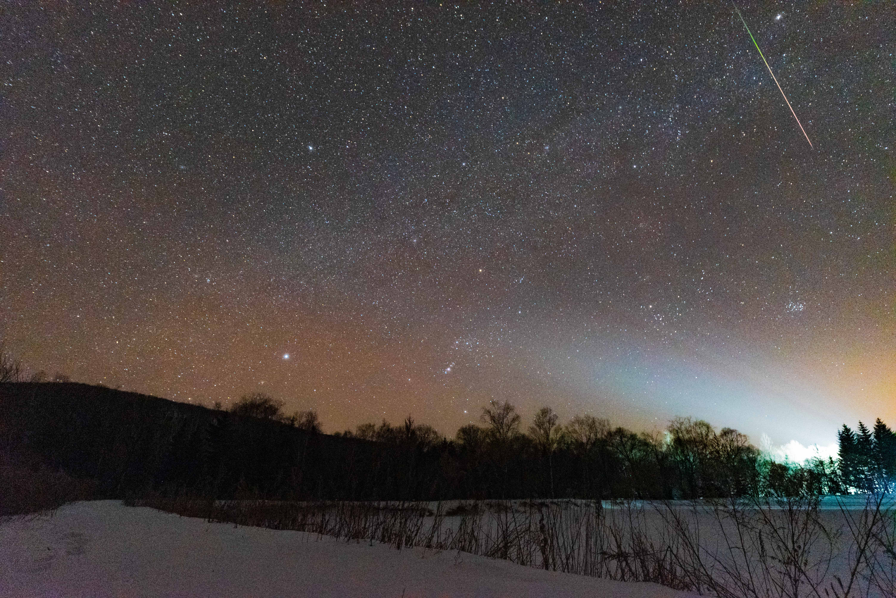

数不清半个月来看过多少次天气预报，最终盼到了还算不错的天气。
一些未知的因素，没有在极寒环境久滞的经历，心里许多不安。害怕让同行的朋友失望而归，他特意从太原飞来。因为流星雨观测条件非常苛刻，晴天无云、无雾无霾、月相，透明度……
倒计时一个月，还有一周，就在今天。所有的准备、运气和期待都看今晚（12月13）了。终于和老杨、栋骞踏上帽儿山的最后一班车。
一切远没有这么顺利…帽儿山镇厚重的雾霾让我有点沮丧。在去站上的路上侯姐安慰我们，“没事，到山上就没了”。但到了山上才发现，山上在飘雪。天气不作美，加上肚子突发剧痛。只能跟他两说：“先睡会儿吧，1点我再叫你们起床”
12点半，再去外面看天气，拉开门的瞬间眼前划过一颗流星。“卧槽，快快快快起来，我看到流星了”
零下30度，对身体、拍摄器材的电量都是一种极大的挑战（还要感谢xxx借予的手套）。两点左右实在受不了了，都跑回了屋里。后半夜，隔半小时出去给相机换电池。最后一块拍到关机，已经凌晨5点49
太冷太冷了，冷到怀疑人生。
刷到福楼拜的一句话
在人的一生中最为辉煌的一天，并不是功成名就的那一天，而是从悲叹和绝望中产生的对人生挑战的欲望，并且勇敢的迈向这种挑战的那一天。
感谢学长的帮助！感谢你们的信任和陪同！
冷是真的冷，但看到一颗颗流星划过天际。一切都值了。如果有再一次尝试的机会，我想我不会犹豫。
